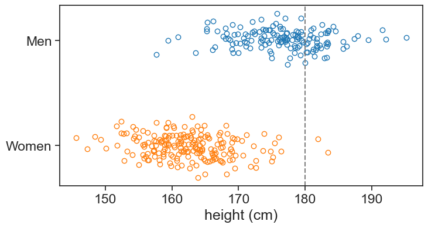
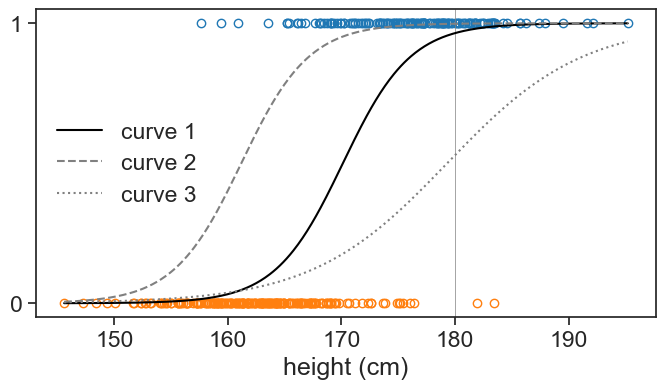
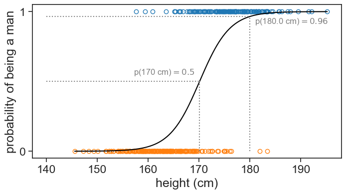
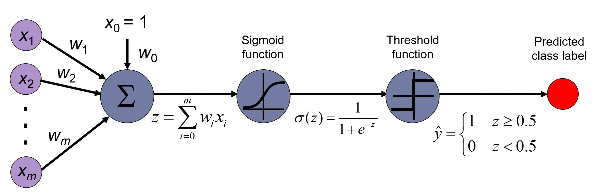

23 logistic regression
23.1 question
We are given a list of heights for men and women. Given one more data point (180 cm), could we assign a probability that it belongs to either class?
See the figure below, this should give us an intution of the problem. Note that I added some noise to the data points in the vertical direction just to make them more visible.
generate data
df_boys = pd.read_csv('../archive/data/height/boys_height_stats.csv', index_col=0)
df_girls = pd.read_csv('../archive/data/height/girls_height_stats.csv', index_col=0)
age = 20.0
mu_boys = df_boys.loc[age, 'mu']
mu_girls = df_girls.loc[age, 'mu']
sigma_boys = df_boys.loc[age, 'sigma']
sigma_girls = df_girls.loc[age, 'sigma']
N_boys = 150
N_girls = 200
rng = np.random.default_rng(seed=1)
sample_boys = norm.rvs(size=N_boys, loc=mu_boys, scale=sigma_boys, random_state=rng)
sample_girls = norm.rvs(size=N_girls, loc=mu_girls, scale=sigma_girls, random_state=rng)
# pandas dataframe with the two samples in it
df = pd.DataFrame({
'height (cm)': np.concatenate([sample_boys, sample_girls]),
'sex': ['M'] * N_boys + ['F'] * N_girls
})
# shuffle the dataframe
df = df.sample(frac=1, random_state=314).reset_index(drop=True)plot clouds of points
fig, ax = plt.subplots(figsize=(8, 4))
ax.plot(sample_boys, 1 + rng.normal(scale=0.1, size=N_boys), 'o', label='Boys', mfc='None', mec="tab:blue")
ax.plot(sample_girls, 0 + rng.normal(scale=0.1, size=N_girls), 'o', label='Girls', mfc='None', mec="tab:orange")
ax.axvline(x=180, color='gray', linestyle='--', label='threshold')
ax.set(xlabel='height (cm)',
yticks=[0, 1],
yticklabels=['Women', 'Men']);
23.2 s-shaped function
The idea behind the logistic regression is to assign a probability p to each x value that it belongs to one of the classes, say, “men”. Because there are only two classes, the complement of the probability (1-p) represents the probability of belonging to the class “women”. We can then discriminate between the two classes by finding a threshold value of p (e.g. 0.5), saying that a new measurement to the right of this threshold is more likely than not to belong to such and such class.
We will model the probability that a new data point x belongs to the class “men” using a logistic function:
p(x; \beta_0, \beta_1) = \frac{1}{1 + e^{-(\beta_0 + \beta_1 x)}}
where \beta_0 and \beta_1 are the parameters of the model. This function give an s-shaped curve that goes from 0 to 1 as x increases. The parameters \beta_0 and \beta_1 control the shape of the curve. By changing these \beta parameters we can control the position and slope of the curve, see three examples below.
compute logistic regression using sklearn
X = df['height (cm)'].values.reshape(-1, 1)
y = df['sex'].map({'M': 1, 'F': 0}).values
log_reg = LogisticRegression(penalty=None, solver='newton-cg', max_iter= 150).fit(X,y)
beta1 = log_reg.coef_[0][0]
beta0 = log_reg.intercept_[0]
def logistic_function(x, beta0, beta1):
return 1 / (1 + np.exp(-(beta0 + beta1 * x)))plot some s-shaped curves
x = np.linspace(df['height (cm)'].min(), df['height (cm)'].max(), 500)
fig, ax = plt.subplots(figsize=(8, 4))
ax.plot(sample_boys, np.ones_like(sample_boys), 'o', mfc='None', mec="tab:blue")
ax.plot(sample_girls, np.zeros_like(sample_girls), 'o', mfc='None', mec="tab:orange")
ax.axvline(x=180, color='gray', linestyle='-', lw=0.5)
ax.plot(x, logistic_function(x, beta0, beta1), color='black', label="curve 1")
ax.plot(x, logistic_function(x, beta0+3, beta1), color='gray', linestyle='--', label="curve 2")
ax.plot(x, logistic_function(x, beta0+27, beta1*0.5), color='gray', linestyle=':', label="curve 3")
ax.legend(frameon=False)
ax.set(xlabel='height (cm)',
yticks=[0, 1],
);
print(f"curve 1: P(man | h=180 cm) = {logistic_function(180, beta0, beta1):.2f}")
print(f"curve 2: P(man | h=180 cm) = {logistic_function(180, beta0+3, beta1):.2f}")
print(f"curve 3: P(man | h=180 cm) = {logistic_function(180, beta0+23, beta1*0.5):.2f}")curve 1: P(man | h=180 cm) = 0.96
curve 2: P(man | h=180 cm) = 1.00
curve 3: P(man | h=180 cm) = 0.02
Curves 1, 2, and 3 predict that the probability (the hight of the function) of a person with height 180 cm being a man is 92%, 100% and 39% respectively. Curve 1 seems the most sensible in this case: it is not impossible that a woman is 180 cm tall (as curve 2 suggests), but neither it is more probable that a person with height 180 cm is a woman (as curve 3 suggests).
23.3 cost function
We need to find the \beta parameters that give the best estimates not only for one data point, but for all the data points.
In the chapters on linear regression, we found the best parameters by minimizing the sum of squared errors. When we choose MSE as our cost function, we are implicitly assuming that the errors are normally distributed. This makes sense in linear regression. Does that make sense in logistic regression?
In logistic regression, we describe a random variable, let’s call it Y, that relates the input space, given by the height x, to the support space, given by the two classes “women” and “men” (or 0 and 1). In this case, assuming an underlying normal distribution for the errors does not make sense, because the support space is not continuous, but discrete. Instead, we will assume that Y follows a Bernoulli distribution, which is a discrete distribution that takes values 0 and 1 with probabilities p and 1-p respectively.
The picture that I have in my head is the following. For each value of x, we toss a coin to determine whether the data point belongs to the class 0 or 1. Our coin in not fair, but biased, and the probability p that we get a 1 is dependent on x through the logistic function. For higher values of x, the probability p is higher, and vice versa.
We already discussed elsewhere the relationship between probability and likelihood. Choosing to model our random variable Y with a Bernoulli distribution means that we have the following likelihood function:
L(y_i \mid p_i) = p_i^{y_i} (1-p_i)^{1-y_i},
where the index i denotes the i-th data point. For instance, if the data point corresponds to a man (y_i=1), we have L=p_i. For women (y_i=0), we have L=1-p_i.
We now add the dependence of p on x and the parameters \beta_0 and \beta_1:
p_i = \frac{1}{1 + e^{-(\beta_0 + \beta_1 x_i)}}.
Putting everything together, we have the following likelihood function for a single data point:
L(y_i \mid x_i, \beta_0, \beta_1) = \left(\frac{1}{1 + e^{-(\beta_0 + \beta_1 x_i)}}\right)^{y_i} \left(1 - \frac{1}{1 + e^{-(\beta_0 + \beta_1 x_i)}}\right)^{1-y_i}.
This equation is somewhat clunky, so I’ll write instead:
L(y_i \mid p(x_i; \beta_0, \beta_1)) = p(x_i; \beta_0, \beta_1)^{y_i} (1-p(x_i; \beta_0, \beta_1))^{1-y_i}.
Assuming that each data point is i.i.d. (independent and identically distributed), the likelihood of the entire dataset is the product of the likelihoods of each data point:
L(\beta_0, \beta_1) = \prod_{i=1}^{N} p(x_i; \beta_0, \beta_1)^{y_i} (1-p(x_i; \beta_0, \beta_1))^{1-y_i}.
Note that now the likelihood is a function only of the parameters \beta_0 and \beta_1, and not of the data points y_i and x_i, since we take into account all the data points in the product. We then take the log of the likelihood to get the log-likelihood:
\ell(\beta_0, \beta_1) = \sum_{i=1}^{N} y_i \log(p(x_i; \beta_0, \beta_1)) + (1-y_i) \log(1-p(x_i; \beta_0, \beta_1)).
This expression, multiplied by minus one, is called the cross-entropy cost function, and it is the cost function that we will minimize to find the best parameters \beta_0 and \beta_1 for our logistic regression model.
It is not possible to use the tools of linear regression to find the parameters \beta_0 and \beta_1 because the relationship between the predictors and the response is nonlinear. Instead, we will use an optimization algorithm called gradient descent to find the parameters that minimize the cost function. The cross-entropy cost function is convex, which means that it has a single global minimum, and gradient descent will converge to it.
23.4 wrapping up
From the provided data:
- What is the probability that a person whose height is 180 cm is a man?
- If we had to choose one height to discriminate between men and women, what would it be? Let’s assume that we want to choose a height such that the probability of being a man is 0.5.
Let’s use scipy’s LogisticRegression to find the parameters \beta_0 and \beta_1 that best fit the data, and then we will use these parameters to answer the questions above.
plot best fit
x = np.linspace(df['height (cm)'].min(), df['height (cm)'].max(), 500)
fig, ax = plt.subplots(figsize=(8, 4))
ax.plot(sample_boys, np.ones_like(sample_boys), 'o', mfc='None', mec="tab:blue")
ax.plot(sample_girls, np.zeros_like(sample_girls), 'o', mfc='None', mec="tab:orange")
# ax.axvline(x=180, color='gray', linestyle='-', lw=0.5)
ax.plot(x, logistic_function(x, beta0, beta1), color='black', label="curve 1")
h = 180.0
p180 = log_reg.predict_proba(np.array([[h]]))[0, 1]
ax.plot([h, h], [0, p180], color='gray', linestyle=':')
ax.plot([np.min(x_array), h], [p180, p180], color='gray', linestyle=':')
ax.text(h+1, p180-0.05, fr"p({h} cm)$={p180:.2f}$", color='gray', fontsize=12)
p_50percent = -beta0 / beta1
ax.plot([p_50percent, p_50percent], [0, 0.5], color='gray', linestyle=':')
ax.plot([np.min(x_array), p_50percent], [0.5, 0.5], color='gray', linestyle=':')
ax.text(p_50percent-1, 0.5+0.05, fr"p({p_50percent:.0f} cm)$=0.5$", color='gray', fontsize=12, ha='right')
ax.set(xlabel='height (cm)',
yticks=[0, 1],
ylabel='probability of being a man',
);curve 1: P(man | h=180 cm) = 0.96
curve 2: P(man | h=180 cm) = 1.00
curve 3: P(man | h=180 cm) = 0.02
Answers:
- The probability that a person 180 cm tall is a man is 96%.
- The height that best discriminates between men (above) and women (below) is 171 cm.
This last result follows directly from:
\begin{align*} P(x) = \frac{1}{1+\exp[-(\beta_0+\beta_1 x)]} &= \frac{1}{2} \\ & \text{therefore} \\ 1+\exp[-(\beta_0+\beta_1 x)] &= 2 \\ \exp[-(\beta_0+\beta_1 x)] &= 1 \\ -(\beta_0+\beta_1 x) &= 0 \\ x &= -\frac{\beta_0}{\beta_1} \end{align*}
Compare this result with the one we obtained with the parametric generative model discussed in the Bayes’ theorem section.
If you want to see a nice tutorial, see Dr. Roi Yehoshua’s “Mastering Logistic Regression”.
23.5 connection to neural networks
The logistic regression can be understood as a single-layer perceptron neural network model. This is to say, a neural network with no hidden layers, and a single output neuron that uses the logistic (sigmoid) activation function.
